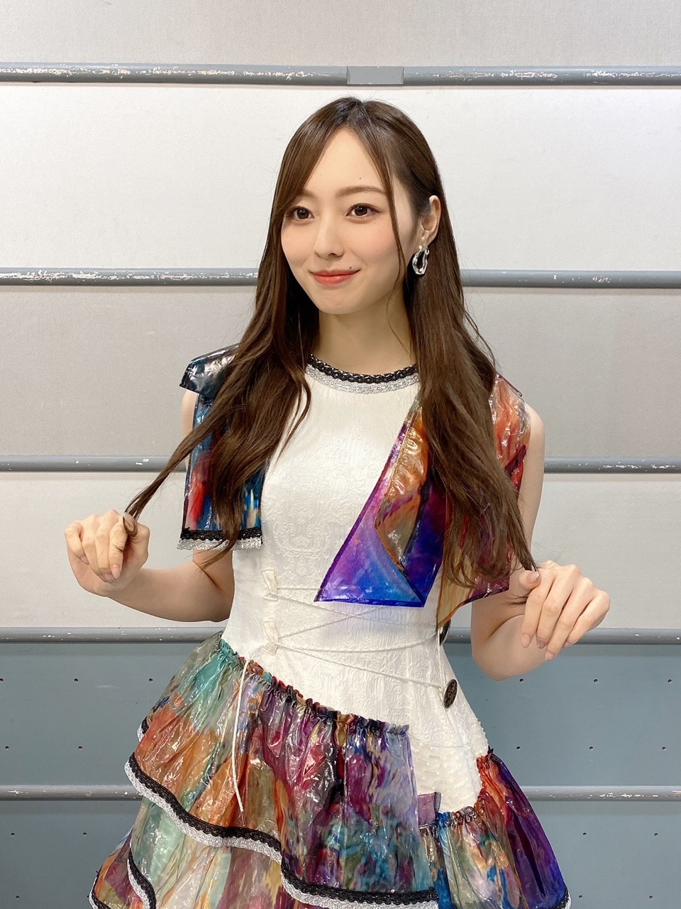
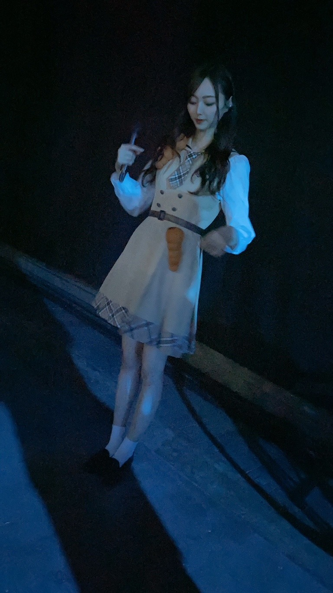
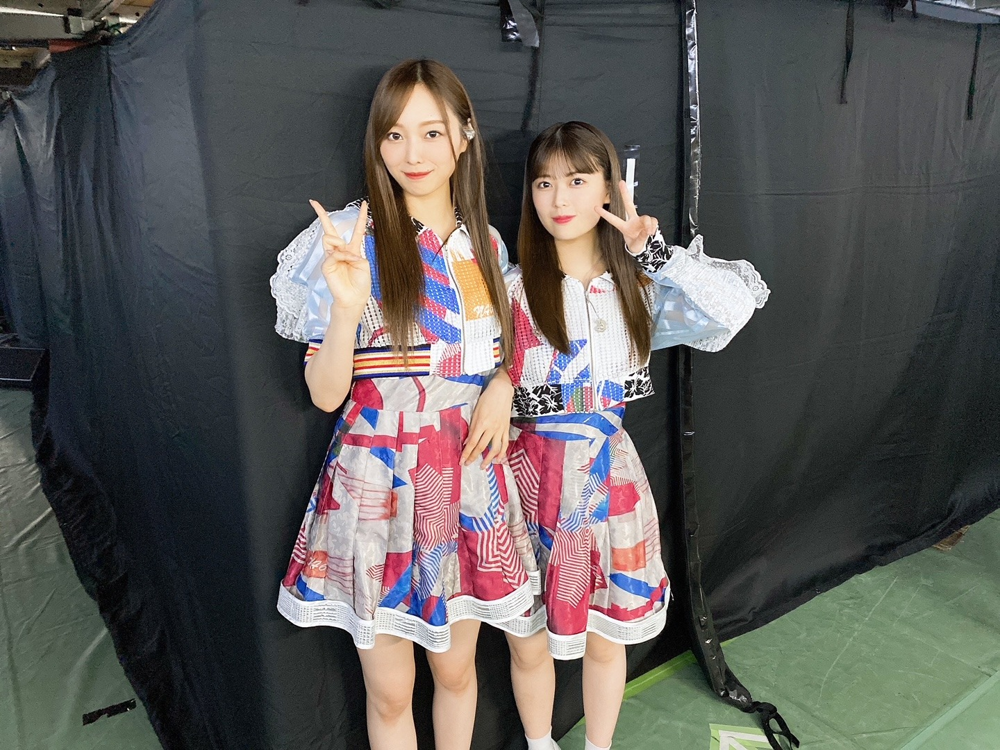
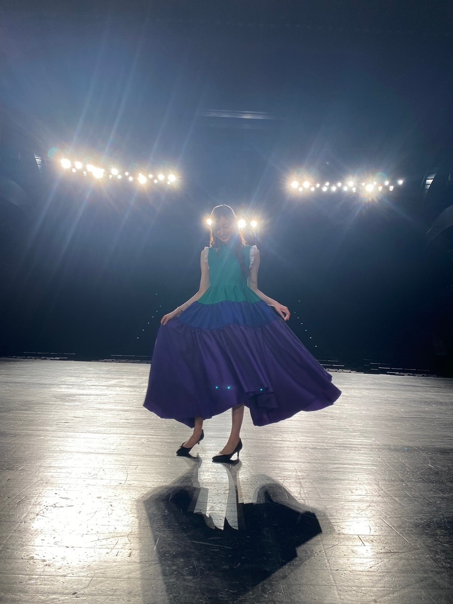

ブログを書くときとアップするときの時系列が一致しませんね、ところでやっと寒さが来ましたね

どこを見てるんだろう？
只今 朝の3時をまわったところ。
色々考え事をしていたら眠るタイミングを逃し
季節の変わり目ですね。
私の好きな時期がやって来てくれました！
香水 変えたくなりません？
秋ってすごく香りに敏感になる。
わたしだけ？
みんなが金木犀を求める時期だ。
わたしももちろん。
もういなくなってしまったかな〜
今年の夏は
抱えきれないほどの思い出が
たくさん作れた気がします〜！
好きだなあ
と思える瞬間が たくさんあったように感じます
時折
もしも別の人生を歩んでいたら...？
と 妄想することがありますが
想像がつかなすぎて何も浮かばないし
ただの妄想に過ぎないので
ここに来られて良かったんだろうな、と
そう思います、そう思いたい(^-^)
わたしはこれで間違いなかったんだよ と
そう思わせてくれる思い出と 記憶が
ぽつぽつと増えた ひと夏でした。

３色パン（暗くてごめんね
いもむしが 付いてるわけじゃあないよ。
チョココロネだよ...
ちなみに押すと音が鳴る、あいつです。
バレッタ制服は 自分で選びました。
過去の衣装を着ることがあっても
過去の制服を着ることは中々無くてですね。
わくわくしちゃいました。
好きな制服たくさんあるんですよー！
悩んだ〜

この写真のテーマは 初々しさ
だったと思います
10月1日より TBSにてスタートしました
朝5:20〜放送の「THE TIME」
月曜レギュラーを努めさせて頂くことになりました。
もう何度か 生放送終えていますが
やはりどこか違う緊張感と、
シャキッと感があります。
日々数分ごとに変わってくる
ジャンル問わず様々な情報を
正確に伝えていくことの大変さを身に染みて感じています。
幼い頃から 当たり前のように見ていた朝の番組。
これだけの方の力があって
私たちの耳に色んな情報が届くんだなと
改めて感謝の気持ちと
伝える側になった今、その責任感をより感じています。
安住さんをはじめ、
出演者の皆様、スタッフの皆様には
今は助けていただいてばかりですが...
わたしも力になれるよう 全力で努めさせていただきます！
この番組の歴史の第一歩、スタートに
こうしていられる事が幸せでなりません。
皆様の良い一日が、良い一週間がスタート出来るようお力添えできますように。
早起きの皆様、
どうか よろしくお願いします(^-^)
ちなみに わたしは早起き得意です〜
番組公式SNS、
Twitter、Instagram、Tiktok、
ぜひチェックしてみてください〜
ユーモア溢れる投稿もあって かなり好きです☀︎

らたたたた
では、また書きます(^-^)
Original：https://www.nogizaka46.com/s/n46/diary/detail/63905?ima=4933&cd=MEMBER